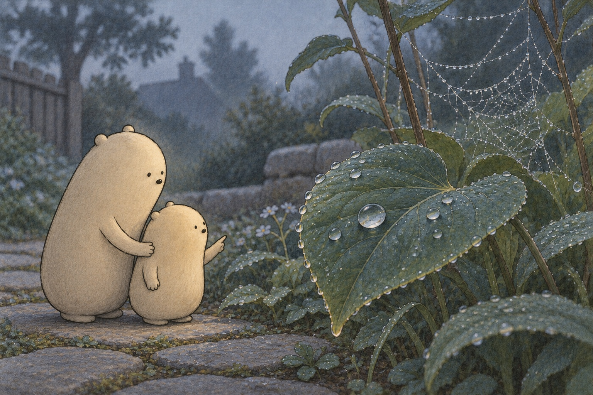
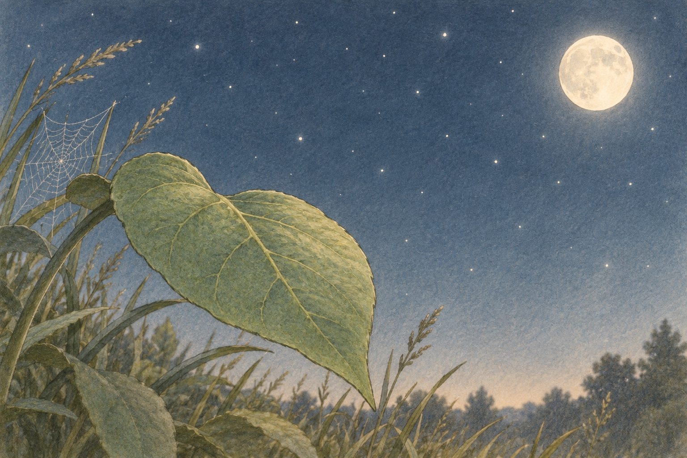
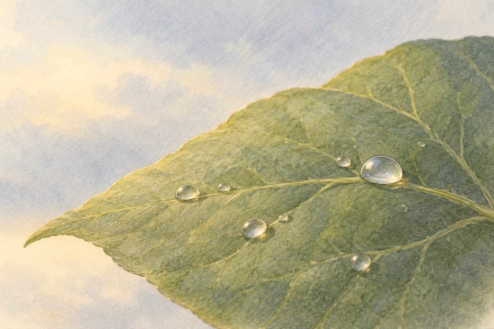

Little’s instructions for dew
The drops that did not fall.

Before sunrise, Little Wonderer found tiny drops on a leaf. A spider web beside it wore shining beads. “Did I miss the rain?” Little asked. The path was dry. Big Wonderer knelt beside the leaf. “Let’s follow the clues back through the night.”

The night had been clear and calm. The leaf gave off heat to the open sky. It cooled and could get colder than the air around it. Little began a list of nature’s instructions: “1. Cool the leaf.” Nothing had fallen from the sky.

Air holds water vapor, water in a gas form we cannot see. Air touching the cool leaf cooled too. At the dew point, it was cool enough that it could not keep all its water invisible. Little added: “2. Wait for the air to touch it.”
- water vapor
- water in a gas form that we cannot see
- dew point
- the temperature where cooling air becomes cool enough for water vapor to condense
- condense
- change from a gas into liquid drops
- evaporate
- change from liquid water into water vapor
- command
- a sentence that tells what to do, such as “Cool the leaf.”